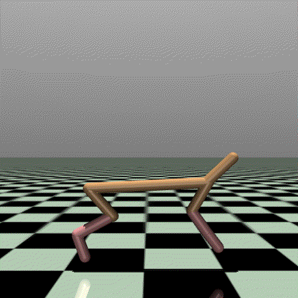
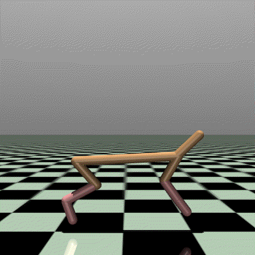

MuJoCo运行结果¶
环境介绍¶
 

{kind=link}


测试结果¶
Task |
Ant |
HalfCheetah |
Hopper |
Walker2d |
Swimmer |
Humanoid |
Reacher |
Ipendulum |
IDPendulum |
|
DDPG |
XuanPolicy |
1472.8 |
10093 |
3434.9 |
2443.7 |
67.7 |
99 |
-4.05 |
1000 |
9359.8 |
Tianshou |
990.4 |
11718.7 |
2197 |
1400.6 |
144.1 |
177.3 |
-3.3 |
1000 |
8364.3 |
|
Published |
1005.3 |
3305.6 |
2020.5 |
1843.6 |
/ |
/ |
-6.5 |
1000 |
9355.5 |
|
SpinningUp |
840 |
11000 |
1800 |
1950 |
137 |
/ |
/ |
/ |
/ |
|
TD3 |
XuanPolicy |
4822.9 |
10718.1 |
3492.4 |
4307.9 |
59.9 |
547.88 |
-4.07 |
1000 |
9358.9 |
Tianshou |
5116.4 |
10201.2 |
3472.2 |
3982.4 |
104.2 |
5189.5 |
-2.7 |
1000 |
9349.2 |
|
Published |
4372.4 |
9637 |
3564.1 |
4682.8 |
/ |
/ |
-3.6 |
1000 |
9337.5 |
|
SpinningUp |
3800 |
9750 |
2860 |
4000 |
78 |
/ |
/ |
/ |
/ |
|
A2C |
XuanPolicy |
1420.4 |
2674.5 |
825.9 |
970.6 |
51.4 |
240.9 |
-11.7 |
1000 |
9357.8 |
Tianshou |
3485.4 |
1829.9 |
1253.2 |
1091.6 |
36.6 |
1726 |
-6.7 |
1000 |
9257.7 |
|
Published |
/ |
1000 |
900 |
850 |
31 |
/ |
-24 |
1000 |
8100 |
|
PPO |
XuanPolicy |
2810.7 |
4628.4 |
3450.1 |
4318.6 |
108.9 |
705.5 |
-8.1 |
1000 |
9359.1 |
Tianshou |
3258.4 |
5783.9 |
2609.3 |
3588.5 |
66.7 |
787.1 |
-4.1 |
1000 |
9231.3 |
|
Published |
/ |
1800 |
2330 |
3460 |
108 |
/ |
-7 |
1000 |
8000 |
|
SpinningUp |
650 |
1670 |
1850 |
1230 |
120 |
/ |
/ |
/ |
/ |